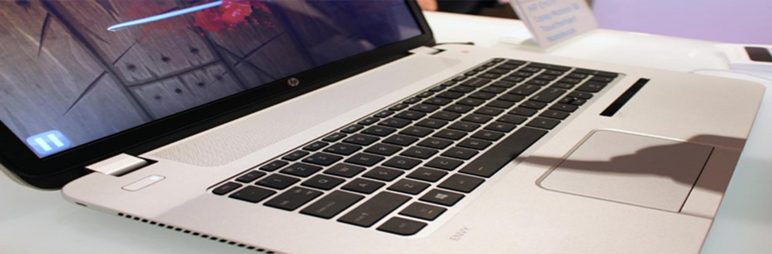
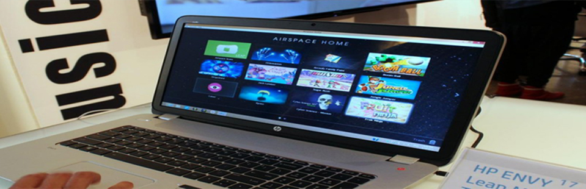
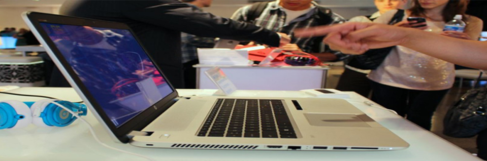

- 
- 
- 
It is been less than a decade since consumers started getting used to interacting
with their computers and mobile devices with touch, yet now physical contact seems so
old-fashioned. Now it is all about touchless control and the ability to navigate your laptop
with just your eyes or your hands. (Next up: mind control.) HP is eager to be on the forefront
of this trend with the first consumer laptop to fully integrate Leap Motion gesture-based
control: the HP Envy 17 Leap Motion SE. Due out later this month, the new Envy will start at
$1,050.
Earlier this summer we reviewed the standalone Leap Motion Controller that hooks up to any computer
via USB. HP’s new laptop uses that same technology, sized to fit seamlessly into the chassis.
The only outward indication that there is something different going on with the Envy is the sensor
strip to the right of the touchpad. Otherwise, it looks much like previous models. Though this is
a larger Envy, HP keeps it looking slim with tapered edges. The controller does not appear to have
added much, if any, bulk. Keep in mind that this is a metal laptop with a 17.3-inch display, so its
not going to be light and ultraportable regardless. For the size, the Envy manages to be surprisingly
balanced and not too heavy
Desktop replacements often end up hooked to extra monitors and a lot of peripherals,
so controlling with gestures could enhance that experience. From our short time with
the notebook, it looks like a few of the same issues we encountered with the Leap Motion
controllers precision remain, though they are not as prominent. The positioning issue we
encountered is not as big a problem, since you can easily turn the sensor off when not needed.
The new issue is that left-handed people would not be able to comfortably use their dominant hand.
With an embedded sensor, it is easier to see the possibilities for gesture-based control.
Just lift up your hand to move the cursor or flick a webpage up or down, then go right back
to typing.
Big, sweeping motion is the Leap controllers forte. All of the apps we tried, from Fruit
Ninja to Google Earth, responded really well to all five fingers and motions. But we only tried
a few Leap-enabled apps, and none of the ones designed to eliminate the need for a mouse or keyboard.
So far the signs are encouraging. Airspace, the Leap app store, comes bundled with the Envy along with
HP s usual software suite. Buyers will get five free apps to start.
Per usual, HP will offer the Envy with a long list of options. A crucial one:
touch or no touch? With the Leap Motion controller embedded, is touch necessary,
anymore ? Navigating Windows 8 without touch is doable, though many find it frustrating.
For those touch-focused features like calling up charms or swiping between apps, will an
air gesture satisfy? Without really good precision, gestures would not help when trying to click
tiny elements in Desktop mode. But aren’t people still using a mouse for that, anyway? It will
be interesting to see if the inclusion of a touch less sensor makes touch screens unnecessary.
Aside from the futuristic hand-waving control, the Envy 17 looks to be a pretty sweet laptop by itself.
The keyboard is as comfortable as HP s keyboards get with a decent feel and response to typing. The wide
touchpad seemed responsive and we did not note any lag or jerkiness. As always, we appreciate having the
speakers on the deck so the benefits of Beats Audio come though clearly. The metal chassis is sturdy and
looks great, and since this is a 17.3-inch desktop replacement it is not wanting for ports
The laptop will be available with Intel Core i5 and Core i7 CPU options and Nvidia graphics. The base price will only get you a 1600 x 900 resolution display. That is too low for a screen that big. You should spend a little more for the full HD option, though we can not tell you how much you should budget just yet. HP has not released the full list of specs, options, or pricing beyond the base cost yet. The HP Envy 17 Leap Motion SE will be available for pre-order on October 16, starting at $1,050. We will keep you updated as the full specs emerge as well as a firm ship date.